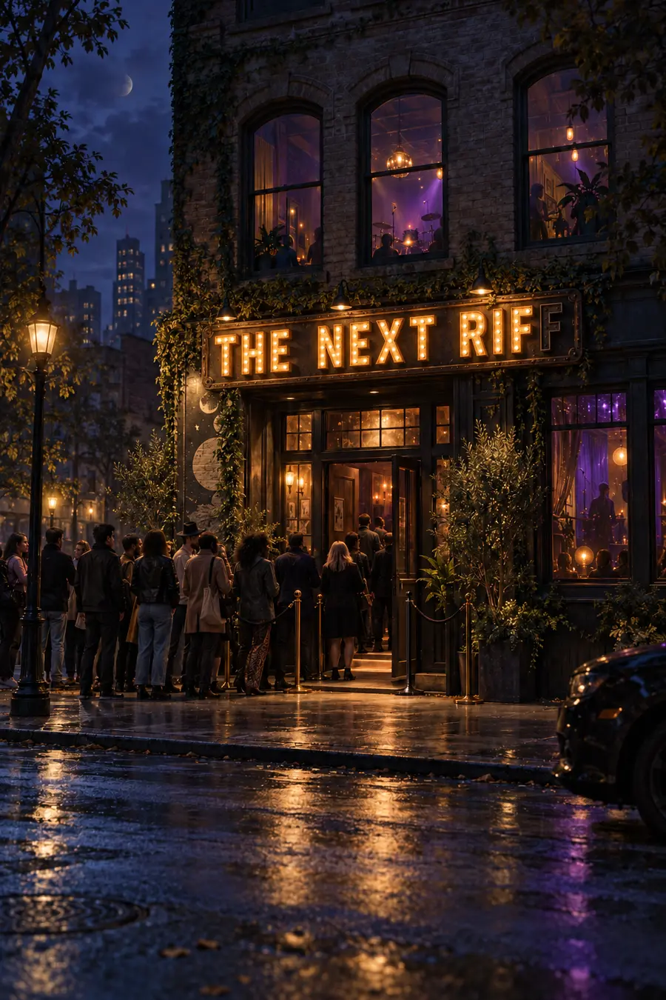
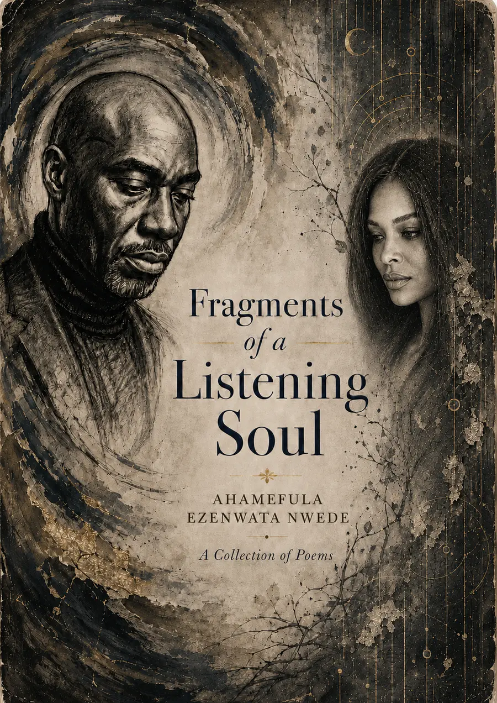
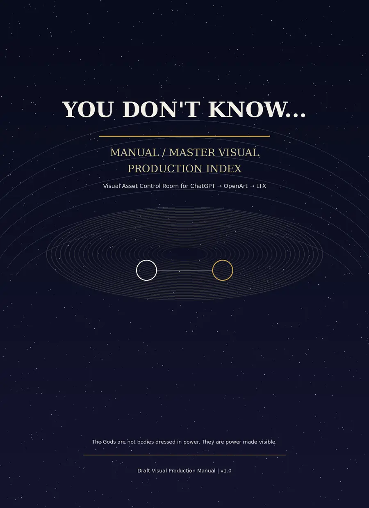
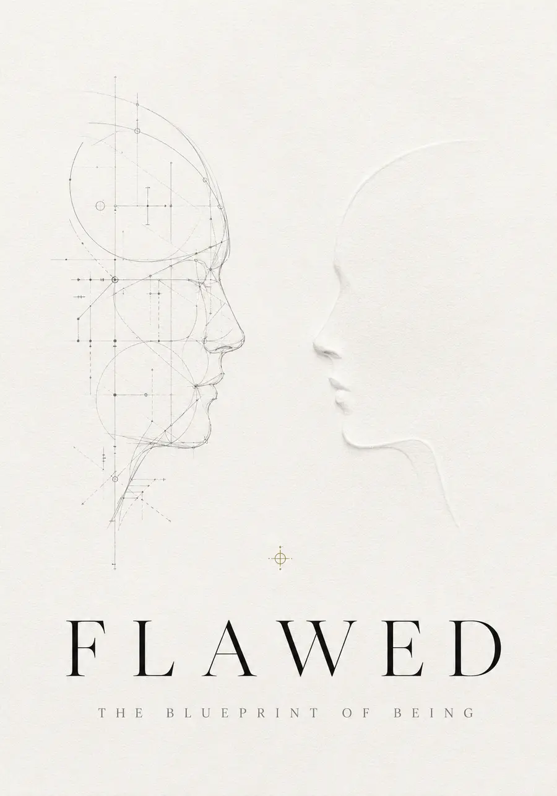

06C-H06
The Next Riff
Music · Story
The next sound is already waiting inside.
Outside a glowing venue, the line grows longer. Beyond the doors, music gathers toward its next beginning.
Room in formation
Room 06C
The central room of Meadnyte—a threshold into the books, sound, images, moving stories, and imagined worlds gathering inside the House.

Featured Project Chamber · H03
Featuring Nwaybulakur and the Sneaky Rock
In the Meadow, mischief and old wisdom are never far apart. Its stories carry family memory, playful consequence, and the lessons that arrive disguised as adventure.
The current doorway opens with Nwaybulakur and the Sneaky Rock: A Muddy Little Lesson.
Listening edition
Listening sample in preparation
Other Project Chambers
Experience our other House projects.

06C-H01
Poetry · Voice · Sound
Every silence is carrying something.
Poetry, voice, image, and sound listen for what memory, grief, identity, and love leave behind.
Enter project
06C-H03
Family Stories · Illustrated Worlds
Old wisdom has a mischievous way of finding us.
In the Meadow, family memory becomes playful adventure, and every muddy mistake carries a lesson home.
Enter project
06C-H05
Music · Moving Image
Some truths can only be heard.
A music-and-image world where longing, revelation, and the unspoken meet between one note and the next.
Enter project
06C-H04
House Project
The fracture may be part of the blueprint.
A meditation on becoming—where imperfection is not the failure of design, but evidence of being alive.
Enter project06C-H02
Character · Story World
Slow feet. Quick wit. Trouble close behind.
Terrapin wanders into a world of character, consequence, and adventures that rarely go according to plan.
Enter project
06C-H06
Music · Story
The next sound is already waiting inside.
Outside a glowing venue, the line grows longer. Beyond the doors, music gathers toward its next beginning.
Room in formation06C-H07
Feature Film · Cosmic Tragicomedy
Humanity is on trial. The universe is listening.
A restrained cosmic tragicomedy in which law, time, and eight billion human contradictions are summoned before an impossible court.
Room in formationShops · Stores · Venues
Experience the House on other Portals.